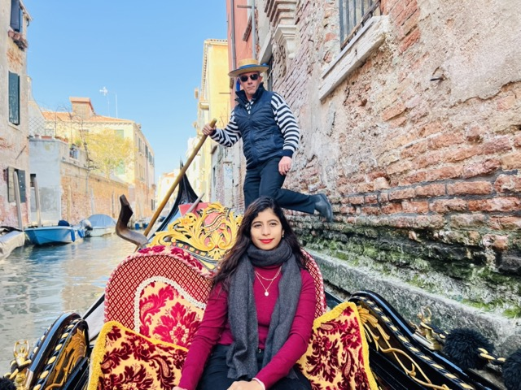
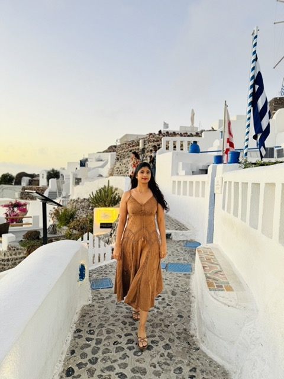
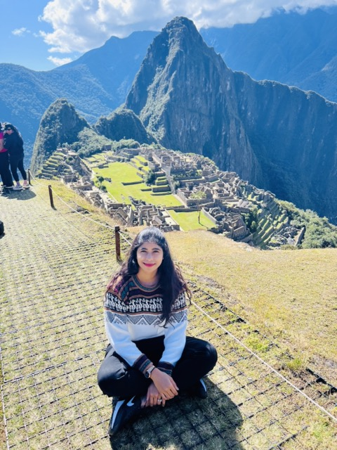
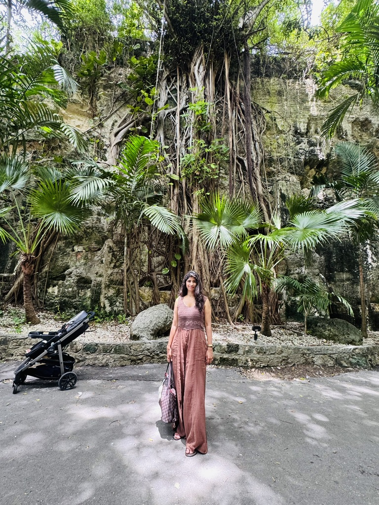
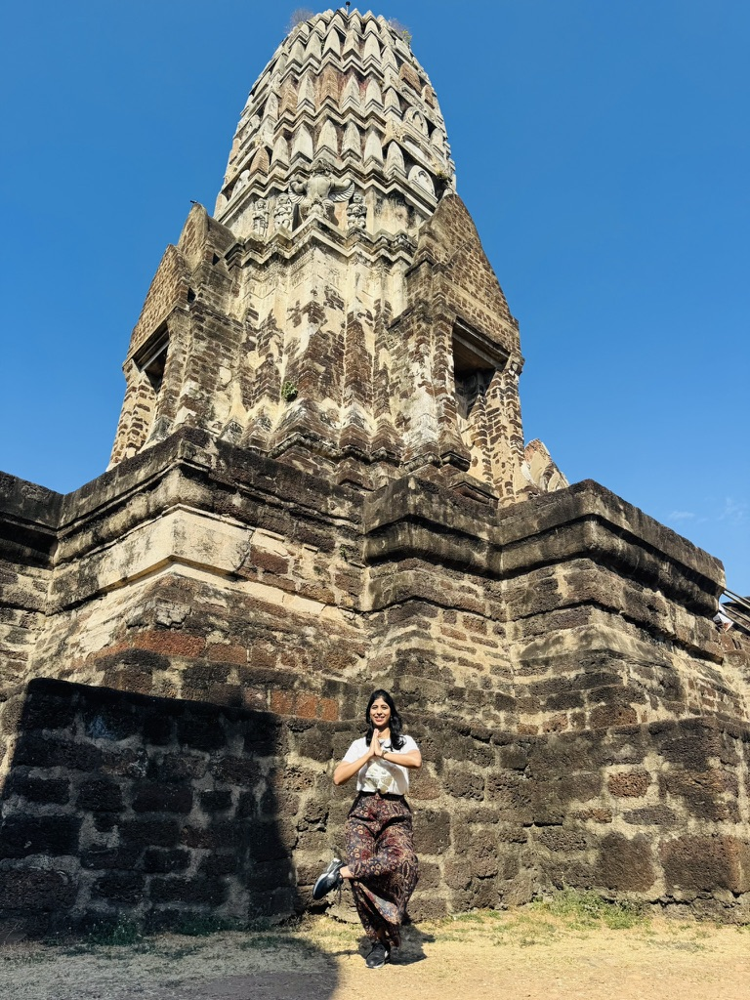
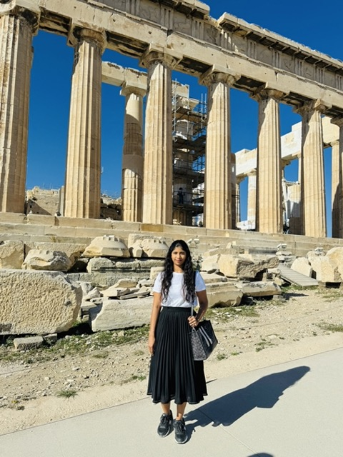
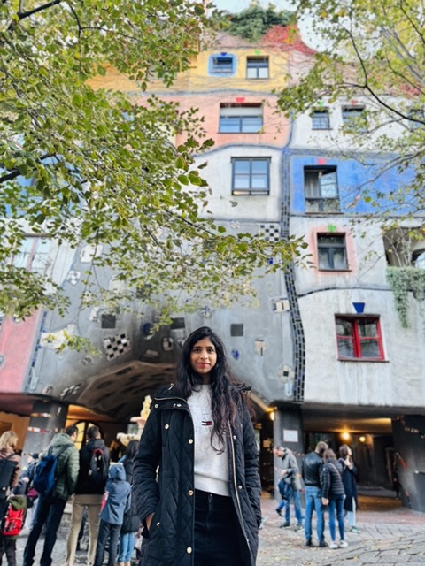
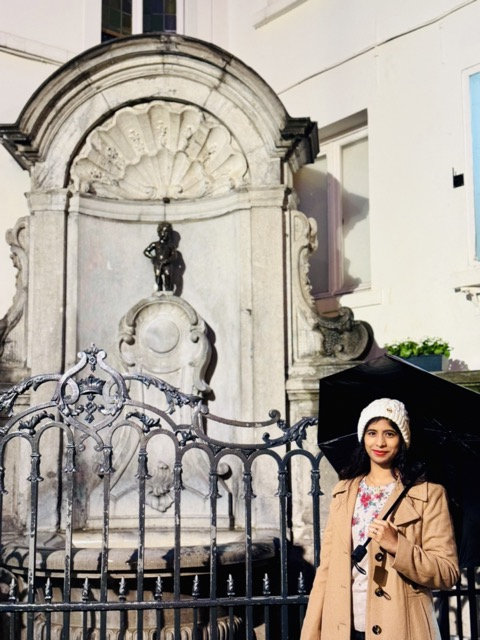
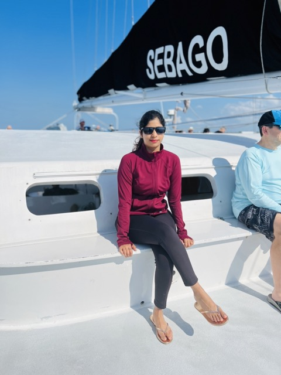
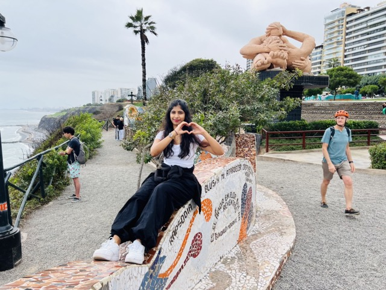

Europe · Italy
Rome, before the crowds
The Colosseum in morning light, and the feeling that the city has been waiting two thousand years for you to show up.








The diary, plus the how
Places to walk, what to eat, when to go, how to move, and the visa maze — in one page, written by someone who actually went.
What’s inside a cityI’m Veda. I keep the ticket stubs, the bad espresso, the 5am light on old stone. These pages are the places that stayed with me — and the notes I wish I’d had before I went: visas, meals, walking days, when to show up. Antarctica is… still a maybe.
What’s in a city page
No need to scroll through pages of ChatGPT chats to find what you already asked.
Open a destination and you get the whole bag: tagged places on a map, how the days actually went, what to order, when to go, and visa notes for Indian and US passports. Rome is packed this way first — the rest of the atlas is catching up.
01 · Walk
The stops I actually walked, on a map — not a dump of every attraction in the guidebook.
02 · Days
How the trip unfolded: mornings, wrong turns, and the hours that were worth the alarm.
03 · Eat
The bowls and bars that mattered. Cream in carbonara is still a different city.
04 · Visa
Indian vs US, India vs H1B/H4/OPT, documents, VFS, the boring bits you otherwise lose in a forum.
05 · When
When the light is kind, where to sleep, and how to move without melting or overpaying.
Europe · Italy
The Colosseum in morning light, and the feeling that the city has been waiting two thousand years for you to show up.
Europe · France
Cold air, iron lace, and one photograph that still looks like a dare.
South America · Peru
Stone fitted so tightly it feels like the mountain grew a city.
Europe · Italy
A city that forgot how to be land. You stop looking for sidewalks and start listening for water.
Europe · Spain
Gaudí under a winter sky. After this, every other skyline looks a little too serious.
North America · Arizona
Red rock stacked like a book you can’t finish. The scale makes your voice come out smaller.
Europe · Greece
A cobbled lane, a Greek flag, and the island at walking speed. The caldera can wait.
Europe · Czechia
Orange against the grey stone. The castle still sitting on the hill like it owns the weather.
Europe · Switzerland
Autumn doing all the talking. The lakes are just out of frame, which is how Switzerland likes to keep you.

Asia · India
Toy-train tracks disappearing into mist. Kanchenjunga is up there. Today it declined to appear.

Europe · Netherlands
A Dutch sky, sightseeing boats, and a basilica pretending to be a skyline.
Europe · Italy
Marble lace against a hard blue sky. Fashion can wait downstairs.

Europe · Greece
The Parthenon still running the weather. Two thousand years, and the sky is the same color.

Europe · Austria
Hundertwasser’s house refusing to sit still. Mozart can have the palaces.
Europe · Germany
Cobbles, a chariot on top, and a city that learned how to come back together.

Europe · Belgium
An umbrella, a trench coat, and a statue that has been famous longer than it should be.
Europe · Vatican City
Bernini’s marble, and Death holding time in a chapel that doesn’t blink.

North America · Illinois
Marina City’s corncobs, late light, and a skyline that knows it’s handsome.

North America · Florida
Sunglasses, a white deck, and the horizon doing what Florida does best.
North America · Bahamas
A curtain of trees on stone. The beach is nearby. This is the quieter Bahamas.

North America · Mexico
El Castillo in the heat, hands on hips, and the jungle keeping its distance.
North America · Mexico
Frida’s blue wall, 1929–1954, and a city that still paints in that color.

North America · California
The letters on the hill, a railing, and light that has been rehearsing all century.
North America · Nevada
Neon, a hedge, and a borrowed Eiffel Tower. The desert is still out there.

South America · Peru
A heart with both hands, mosaic poetry, and cliffs dropping into grey water.

South America · Peru
Thin air, Inca stone, and a very small alpaca who has done this photograph a hundred times.
Asia · Thailand
A prang against a cloudless sky, and one quiet second in a city that never takes one.
Asia · Thailand
Golden nagas, a hill, a Buddha at the top. The beaches can keep the noise.
Asia · India
A waterfall behind the railing, and Sikkim dressed for the photograph.
Nothing on that continent yet — except maybe Antarctica.